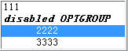
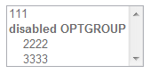

HTML 4.01 中规定，SELECT 元素创建了用来选择的用户选项菜单，每一个用户选项都用 OPTION 元素表示，一个 SELECT 元素中至少有一个 OPTION 元素。
OPTGROUP 元素允许把选项在逻辑上分组，当用户必须从一个很长的选项列表中选择的时候 OPTGROUP 非常有用； 把相关的选项分组比把所有选项放在一个长的选项列表中更容易使人记住和掌握。OPTGROUP 元素必须直接存在于 SELECT 之中。
HTML 4.01 的 Forms 一章中定义了使用 'disabled' 属性控制表单元素是否失效。当设置了 'disabled' 属性后，对元素会有如下影响：
只有 BUTTON、INPUT、OPTGROUP、OPTION、SELECT 和 TEXTAREA 元素支持 'disabled' 属性， UA 决定如何渲染设置了 'disabled' 的元素，现代浏览器一般会把它们的外观置灰。
关于 SELECT、OPTGROUP 及 OPTION 元素的更多信息，请参考 HTML 4.01 17.6 The SELECT, OPTGROUP, and OPTION elements。
关于无效控件（disabled controls）的更多信息，请参考 HTML 4.01 17.12.1 Disabled controls。
IE6 IE7 中对 OPTION 和 OPTGROUP 元素设置 'disabled' 属性无效，元素仍然是有效的。
在 IE6 IE7 中对 OPTION 和 OPTGROUP 元素设置 'disabled' 属性无效，这除了导致在外观上 OPTION 和 OPTGROUP 元素与其它浏览器存在差异， 还可能导致依赖于这两个元素 disabled 特性值的脚本代码出现异常。
| IE6 IE7 |
|---|
分析以下代码：
<form action="google.com" method="post"> <select name="sel" id="select"
multiple="multiple"> <option value="1" disabled="disabled">111</option> <optgroup
label="disabled OPTGROUP" disabled="disabled"> <option value="2">2222</option> <option
value="3">3333</option> </optgroup> </select> </form>
各浏览器中表现如下：
| IE6 IE7 | IE8 Firefox Chrome Safari Opera |
|---|---|
|  |  |
从上图中可以看出 IE6 IE7 下对 OPTION 和 OPTGROUP 元素设置 disabled 无效，外观没有置灰，并且可以选中，而其它浏览器中则不可以。
使用其他方式使想要 disabled 的 OPTION 和 OPTGROUP 无效，比如使用脚本动态删除 OPTION 或 OPTGROUP。
| 操作系统版本: | Windows 7 Ultimate build 7600 |
|---|---|
| 浏览器版本: |
IE6
IE7 IE8 Firefox 3.6.9 Chrome 7.0.517.5 dev Safari 5.0.2 (7533.18.5) Opera 10.62 |
| 测试页面: | OPTION_OPTGROUP_disabled.html |
| 本文更新时间: | 2010-09-14 |
OPTION OPTGROUP disabled